Station · 23 September · branch station/dock-m3-20260923, built on production ff7ab7d. Nothing deployed, nothing pushed.
You said it about the dock that is live right now: The fucking dock is bunching, bro. Like, the apps on the iOS dock do not bunch. You need to drop things down further down, not make them bunch, not make them over spill onto each other. And there's no reason to compress it all into one screen. And this drop down for the macro thing — the zooming is really fucking shit up. It needs to zoom out but maintain its functionalities and features.
Every picture here is a real browser shot that I opened and looked at. Every number is measured from the live page, not guessed: I walked the pointer slowly across the whole strip in 49 steps at each width and measured every chip's real box at every step.
1. What is actually wrong with the live dock
Two things, both measured, both visible in the picture below.
Chips land on top of each other by 55.6 px. When you point at a timeframe, the chip grows sideways over the chip next to it and covers it. That is the bunching.
Chips hang 11.6 px below the strip, over the wall.
The strip is centred, so there is a wide black gap to the left of THE STATION.
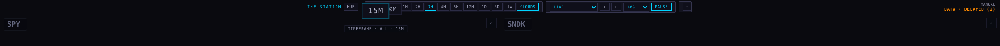
Live now · 2240 The pointer is on 15M. It has grown over 30M — you can only see 0M sticking out from under it. And everything sits in the middle, with black space on the left.
2. What I changed
Nothing is ever squeezed. The old strip scaled itself down to cram everything into the window — at a 1440 laptop it was running at 0.896 of full size, and the magnification had collapsed from 2× to 1.4×. That shrink factor is deleted. The type is the same size at 2240 as it is at 390.
Every chip always owns the room it needs to grow. Each chip holds half of its own full growth as empty space on each side, at every width. Two chips can never reach each other, whatever the pointer does — so nothing bunches and nothing has to shove its neighbour out of the way.
Everything grows downward. The tops of the chips stay on one flat line and the bottoms trace the curve. The strip keeps a fixed height that already holds a chip at full size, so the wall below never moves — measured at 0.00 px of movement through the whole pass.
If it runs out of wall, it scrolls at full size. The sections sit in a rail that slides sideways; the strip is never made smaller to fit. At 2240 and 1680 nothing scrolls — it all fits.
The data age no longer lies on top of the strip. It used to be pinned over the chips, so when the strip scrolled, chips went underneath it — 58 px of the interval picker was covered. It now stands beside the rail, and nothing can pass under it.
The same pass, after
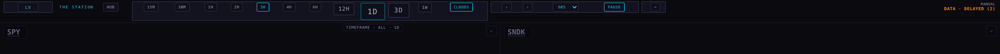
After · 2240 The pointer is on 1D. It is at full size, 12H and 3D step down on either side, and there is clear space between every one of them. The strip starts hard left: LV, THE STATION, HUB.
3. A slow pass across the whole strip
Nine frames from the same 49-step pass, left to right. Live dock on top, new dock underneath.
iMac, 2240 × 1260
live · 1live · 2live · 3live · 4
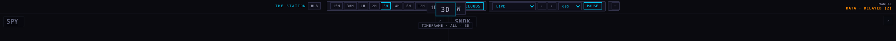
live · 5
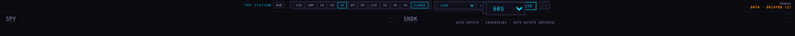
live · 6
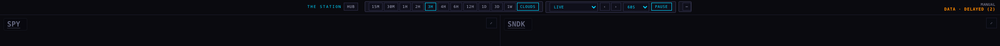
live · 7live · 8live · 9
new · 1new · 2new · 3new · 4
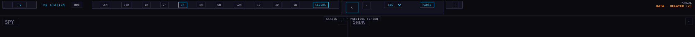
new · 5
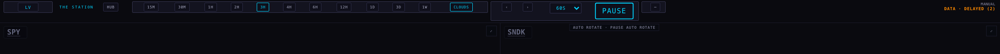
new · 6
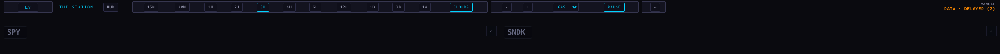
new · 7new · 8new · 9
1680 × 1050
live · 2
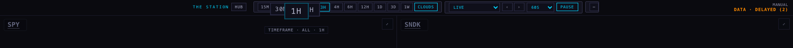
live · 4
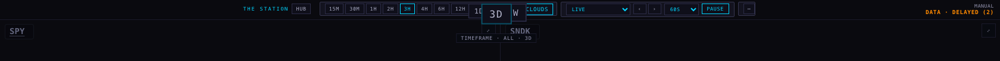
live · 5
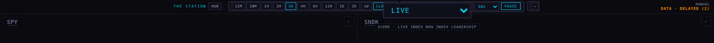
live · 6
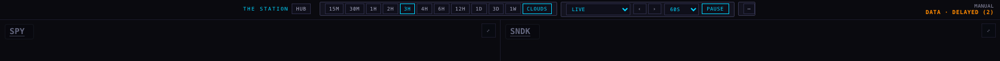
live · 8
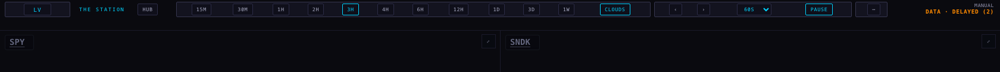
new · 2
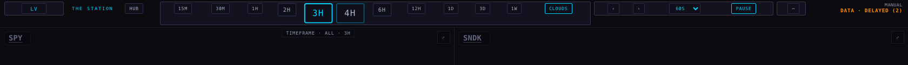
new · 4
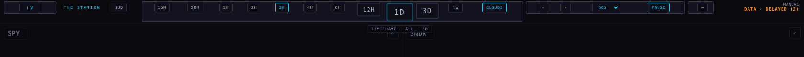
new · 5
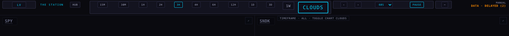
new · 6
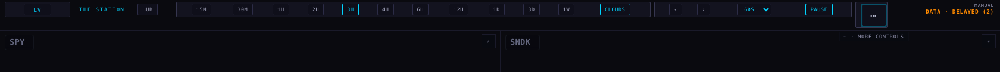
new · 8
After · 1680CLOUDS at full size with 1W stepping down beside it, clear space around both, and the line underneath saying what the chip does.
4. The numbers, measured at every step of the pass
Width
Chips landing on each other
Squeezed?
Biggest a chip gets
Tops on one line?
Wall moved
Scrolls?
2240 · live now
55.6 px
no
1.98×
yes
0.00 px
no
2240 · new
0 px
never
1.99×
yes
0.00 px
no
1680 · live now
55.5 px
no
1.99×
yes
0.00 px
no
1680 · new
0 px
never
1.99×
yes
0.00 px
no
1440 · second pass
0 px
yes — 0.896 of full size
1.95×
yes
0.11 px
no
1440 · new
0 px
never
1.99×
yes
0.00 px
yes, at full size
1100 · second pass
0 px
yes — 0.871 of full size
1.40×
yes
0.11 px
no
1100 · new
0 px
never
2.00×
yes
0.00 px
yes, at full size
Chips landing on each other is the worst overlap between two side-by-side chips found anywhere in the 49-step pass. Wall moved is how far the top of the wall shifted while the strip was being used.
5. When it runs out of wall
Below about 1500 px the chips plus the room their growth needs are wider than the window. The strip is not shrunk. It stays full size and slides sideways, and it still magnifies exactly as it does on the big screen. The last 26 px fade into the background so a chip at the edge reads as more this way instead of looking cut in half.
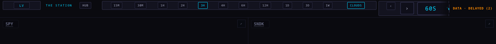
New · 1440 Full size, scrolling. 60S is magnified right at the edge of the rail and fades out into the strip; the age reading sits to the right of the rail, covering nothing.
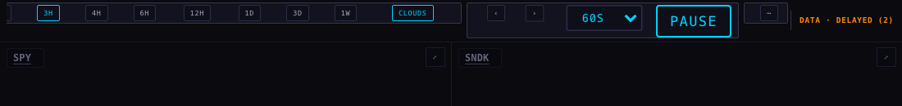
New · 1100 Scrolled to the far end — the ⋯ button is reachable, the fade is gone because there is nothing more to reach.
6. The page switcher
The two-letter chip at the far left is the page switcher. It magnifies like everything else, and while it is magnified it still works:
It grows from 20 px to 40 px, and the real list grows with it — a click at the middle of the magnified chip lands on the list, not beside it. The edge of the chip opens it too.
It carries all 12 pages by their full names — index leadership, company leadership — even though the chip itself says two letters.
It is the first thing the keyboard reaches on the strip, and taking focus magnifies it the same way pointing at it does.
Picking a page really switches the Station: LV became CO and the chip now reads screen: company leadership.
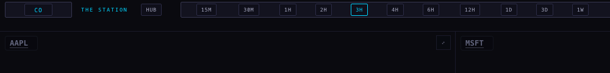
After The switcher after picking a different page by keyboard.
One honest limit: the open list itself is drawn by the Mac, not by the page, so it cannot be photographed from inside a browser shot. I proved it by behaviour instead — the list has all 12 names, the click lands on it while magnified, and choosing an entry really changes the Station.
7. Every screen size
Screen
Rows
Chips on each other
Squeezed
Behaviour
iMac 2240 × 1260
1
0 px
never
everything fits, full magnification
1680 × 1050
1
0 px
never
everything fits, full magnification
iPad landscape
1
0 px
never
fits; a finger gets no magnification, so a tap lands where it aimed
iPad portrait
1
0 px
never
slides sideways, group words shown
Phone 390
1
0 px
never
slides sideways, age reading always visible at the right
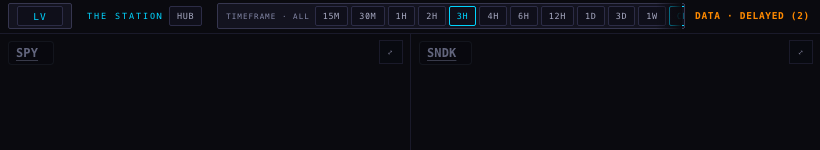
New · iPad portrait One row, the page chip first, the timeframe group named, the age at the right.
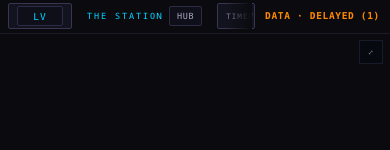
New · phone 390 One row that swipes, nothing stacked on anything.
8. What I did not change, and what is still true
The 50/50 video row, the video feed living in the video pane's own dropdown, the arc behaviour, the auto-hide lip, the smooth clouds, New York time on the axis — all untouched.
Below about 1500 px the strip scrolls rather than showing everything at once. That is the trade for never shrinking it; you asked for it in those words.
Tests: 416 run, 398 pass. The 18 that fail are exactly the same 18 that fail on production today, name for name — they are not about the dock and I did not touch them.
Nothing is deployed and nothing is pushed. This is a branch for you to look at.